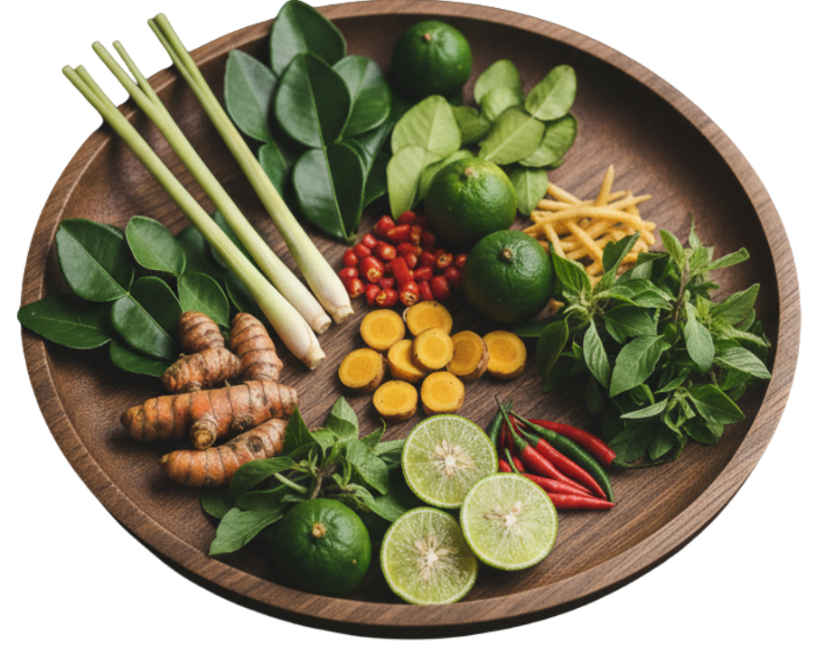
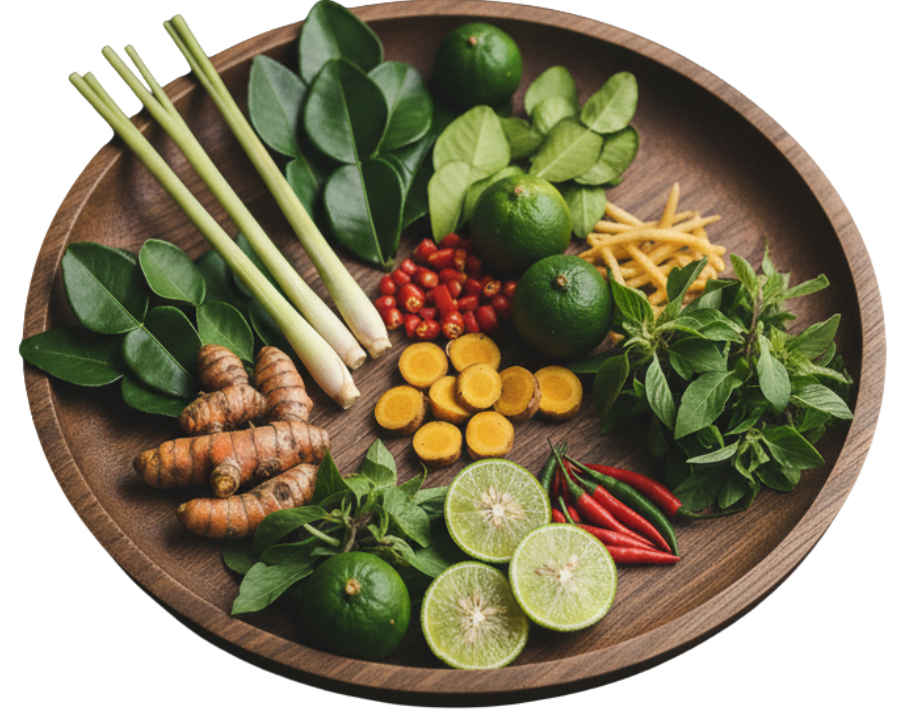
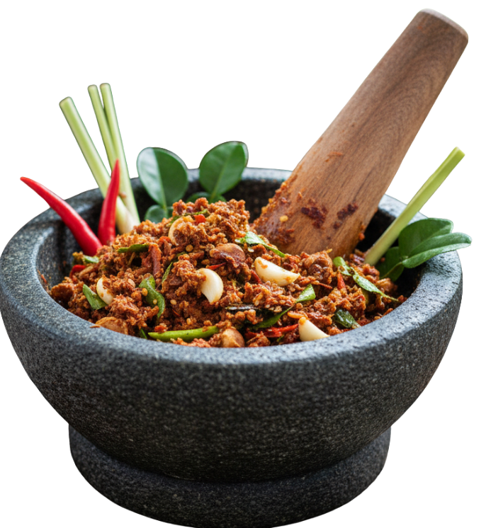
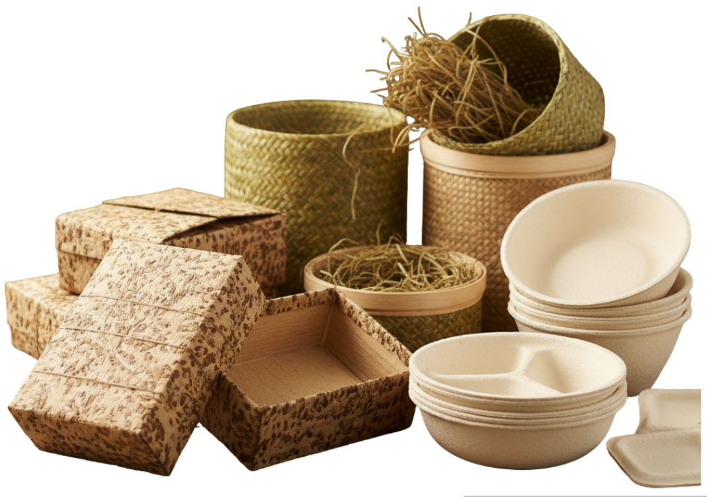

Low Carbon Food
วัตถุดิบท้องถิ่นใกล้แหล่งผลิต ลดการขนส่งและปล่อยก๊าซคาร์บอนต่ำ — เหมาะกับตลาดยุคใหม่ที่ใส่ใจสิ่งแวดล้อม
Journey of The Authentic Thai Cuisine
รากเหง้าแห่งรสชาติ ต้มยำกุ้งและแกงมัสมั่น...
อิทธิพลความสดใหม่และความประณีต...
เทคนิคไฟแรง “Wok Hei”...
เทคนิคฝรั่งเศสช่วยยกระดับอาหารไทย...

อาหารไทยกำลังถูกยกให้เป็น “โมเดลของอาหารแห่งอนาคต”
เพราะเข้ากับกระแสโลกใหม่หลายอย่าง

ไทยมีพื้นที่เกษตรอินทรีย์ทะลุ 300,000+ ไร่ และกำลังขยายทุกปี วัตถุดิบหลายชนิดของไทย (เช่น ข่า ตะไคร้ มะกรูด) เป็น พืชสมุนไพรที่ปลูกแบบโลว์คาร์บอน อยู่แล้ว จึงตอบโจทย์ตลาดที่ต้อง

ไทยมี สมุนไพรและผักพื้นบ้านกว่า 200 ชนิด ที่วิจัยแล้วว่ามีฤทธิ์ทางสุขภาพ เช่น ขมิ้นชัน ตะไคร้ มะขามป้อม กระชายดำ รสชาติอาหารไทยเข้มข้นด้วย “สมุนไพรแท้ ๆ” ทำให้จานเดียวมีสารต้านอนุมูลอิสระสูงมาก อาหารไทยหลายเมนูเป็น “Naturally Healthy Food” อยู่แล้ว

เมืองไทยมีวัตถุดิบเฉพาะถิ่นจำนวนมาก เช่น ข้าวหอมมะลิ, มะนาวสด, ปลาร้าหมักธรรมชาติ, กะปิคั้นมือ,เครื่องแกงตำสด ร้านไทยในต่างประเทศเริ่มทำ “Thai Local Experience Menu” เช่น เมนูอีสานแท้ เมนูใต้รสเข้ม เมนูเหนือกลิ่นสมุนไพร

ไทยมีโรงงานแปรรูปอาหารมาตรฐานโลกจำนวนมาก (HACCP, GMP, FDA EU) อาหารไทยหลายเมนูเหมาะสำหรับ RTE โดยธรรมชาติ เช่น ต้มยำ ผัดไทย แกงต่าง ๆ มีเทคโนโลยีสเตอริไลซ์ อบแห้ง แช่แข็งคุณภาพสูงอยู่แล้ว

การปรับตัวของเกษตรกรผู้เลี้ยงจิ้งหรีดในภาคอีสาน เพื่อยกระดับฟาร์มสู่มาตรฐานสากล ตอบรับกระแสความต้องการโปรตีนจากแมลงซึ่งเป็นอาหารแห่งอนาคตของโลก

ไข่ผำ” เป็นพืชน้ำขนาดเล็กที่มีคุณค่าทางโภชนาการสูง มีลักษณะเป็นเม็ดเล็ก ๆ สีเขียวคล้ายไข่ปลาและกำลังได้รับความนิยมมากขึ้นในฐานะซูเปอร์ฟู้ดของอนาคต เพราะมีโปรตีนสูง อุดมไปด้วยวิตามินและแร่ธาตุที่เป็นประโยชน์ต่อร่างกาย “ไข่ผำ” จึงเป็นอาหารที่ตอบโจทย์ผู้ที่รักสุขภาพและใส่ใจสิ่งแวดล้อม
โปรตีนแห่งอนาคตเป็นหัวข้อสำคัญที่ทั่วโลกให้ความสนใจ โดยเฉพาะโปรตีนจากพืช โปรตีนสังเคราะห์ และแหล่งโปรตีนทางเลือกที่ยั่งยืน เพื่อรองรับความต้องการอาหารในอนาคตที่เพิ่มขึ้นอย่างต่อเนื่อง
จากข้อมูลการส่งออกอาหารไทยในช่วง 10 ปีที่ผ่านมา จะพบว่าอุตสาหกรรมอาหารยังคงเติบโตอย่างต่อเนื่อง โดยมีปัจจัยสำคัญมาจากความนิยมอาหารไทยทั่วโลก และมาตรฐานความปลอดภัยด้านอาหารที่เป็นที่ยอมรับสากล
ทั่วโลกกำลังมองหาอาหารที่ดีต่อโลก ดีต่อสุขภาพ และยังมีตัวตนชัดเจนในรสชาติ อาหารไทย ตอบโจทย์ ครบทั้ง 3 ข้อ—ทั้งวัตถุดิบท้องถิ่น สูตรดั้งเดิม และการพัฒนา แพ็กเกจยั่งยืน นี่คือ “ความพอดี” ที่ทำให้ไทยกลายเป็นต้นแบบของอาหารยุคใหม่
วัตถุดิบท้องถิ่นใกล้แหล่งผลิต ลดการขนส่งและปล่อยก๊าซคาร์บอนต่ำ — เหมาะกับตลาดยุคใหม่ที่ใส่ใจสิ่งแวดล้อม
สูตรดั้งเดิม + วิธีทำที่มีเอกลักษณ์เฉพาะตัว
บรรจุภัณฑ์ที่ย่อยสลายได้ + งานออกแบบใหม่
เลือกสไตล์การกินที่ตรงกับคุณที่สุด